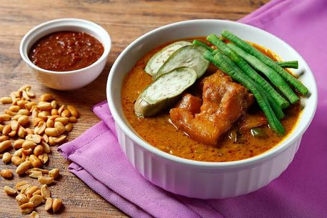

Kare Kare Recipe!
Home

Kare-kare is a Filipino dish featuring a thick savory peanut sauce. It is generally made from a base of stewed oxtail, beef tripe, pork hocks, calves' feet, pig's feet or trotters, various cuts of pork, beef stew meat, and occasionally offal.
Ingredients
- 500g Oxtail
- 2L Water
- 15g Garlic, crushed
- 60g Onion, sliced
- 15ml Oil
- 57g Mama Sita's Kare-Kare Mix, dissolved in 1 cup (250 ml) water or stock
- 250g Eggplant, cut diagonally about ¼" thick
- 250 Sitaw (long green beans), cut into 2" lengths
- 100g Pechay (bok choy)
- 125g Bagoong Alamang (sautéed shrimp paste)
Steps
- Boil oxtail in water and simmer until meat is tender leaving about 1 ½ cups (375 ml) stock. Set aside.
- Sauté garlic and onion in oil. Add boiled oxtail and Mama Sita’s Kare-Kare Mix. Add the remaining stock. Stir and simmer for two minutes.
- Add eggplant and string beans. Simmer for three minutes. Stir once in a while to prevent the sauce from sticking to the pan.
- Add bok choy and simmer for two minutes or until the vegetables are done.
- Serve with bagoong alamang (sautéed shrimp paste)